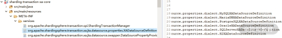
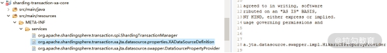
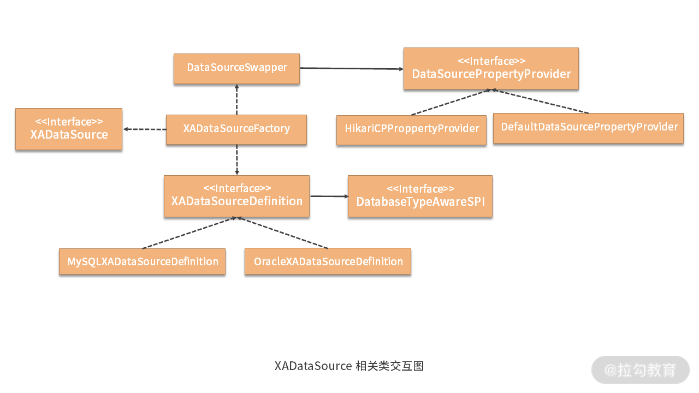

- 00 如何正确学习一款分库分表开源框架？.md.html
- 01 从理论到实践：如何让分库分表真正落地？.md.html
- 02 顶级项目：ShardingSphere 是一款什么样的 Apache 开源软件？.md.html
- 03 规范兼容：JDBC 规范与 ShardingSphere 是什么关系？.md.html
- 04 应用集成：在业务系统中使用 ShardingSphere 的方式有哪些？.md.html
- 05 配置驱动：ShardingSphere 中的配置体系是如何设计的？.md.html
- 06 数据分片：如何实现分库、分表、分库+分表以及强制路由？（上）.md.html
- 07 数据分片：如何实现分库、分表、分库+分表以及强制路由？（下）.md.html
- 08 读写分离：如何集成分库分表+数据库主从架构？.md.html
- 09 分布式事务：如何使用强一致性事务与柔性事务？.md.html
- 10 数据脱敏：如何确保敏感数据的安全访问？.md.html
- 11 编排治理：如何实现分布式环境下的动态配置管理？.md.html
- 12 从应用到原理：如何高效阅读 ShardingSphere 源码？.md.html
- 13 微内核架构：ShardingSphere 如何实现系统的扩展性？.md.html
- 14 分布式主键：ShardingSphere 中有哪些分布式主键实现方式？.md.html
- 15 解析引擎：SQL 解析流程应该包括哪些核心阶段？（上）.md.html
- 16 解析引擎：SQL 解析流程应该包括哪些核心阶段？（下）.md.html
- 17 路由引擎：如何理解分片路由核心类 ShardingRouter 的运作机制？.md.html
- 18 路由引擎：如何实现数据访问的分片路由和广播路由？.md.html
- 19 路由引擎：如何在路由过程中集成多种路由策略和路由算法？.md.html
- 20 改写引擎：如何理解装饰器模式下的 SQL 改写实现机制？.md.html
- 21 执行引擎：分片环境下 SQL 执行的整体流程应该如何进行抽象？.md.html
- 22 执行引擎：如何把握 ShardingSphere 中的 Executor 执行模型？（上）.md.html
- 23 执行引擎：如何把握 ShardingSphere 中的 Executor 执行模型？（下）.md.html
- 24 归并引擎：如何理解数据归并的类型以及简单归并策略的实现过程？.md.html
- 25 归并引擎：如何理解流式归并和内存归并在复杂归并场景下的应用方式？.md.html
- 26 读写分离：普通主从架构和分片主从架构分别是如何实现的？.md.html
- 27 分布式事务：如何理解 ShardingSphere 中对分布式事务的抽象过程？.md.html
- 28 分布式事务：ShardingSphere 中如何集成强一致性事务和柔性事务支持？（上）.md.html
- 29 分布式事务：ShardingSphere 中如何集成强一致性事务和柔性事务支持？（下）.md.html
- 30 数据脱敏：如何基于改写引擎实现低侵入性数据脱敏方案？.md.html
- 31 配置中心：如何基于配置中心实现配置信息的动态化管理？.md.html
- 32 注册中心：如何基于注册中心实现数据库访问熔断机制？.md.html
- 33 链路跟踪：如何基于 Hook 机制以及 OpenTracing 协议实现数据访问链路跟踪？.md.html
- 34 系统集成：如何完成 ShardingSphere 内核与 Spring+SpringBoot 的无缝整合？.md.html
- 35 结语：ShardingSphere 总结及展望.md.html
- 捐赠
28 分布式事务：ShardingSphere 中如何集成强一致性事务和柔性事务支持？（上）
今天我们将在上一课时的基础上，详细展开 ShardingSphere 中分布式事务的具体实现过程。首先，我们将介绍支持强一致性事务的 XAShardingTransactionManager。
XAShardingTransactionManager
让我们回到 ShardingSphere，来到 sharding-transaction-xa-core 工程的 XAShardingTransactionManager 类，该类是分布式事务的 XA 实现类。
我们先来看 XAShardingTransactionManager 类的定义和所包含的变量：
public final class XAShardingTransactionManager implements ShardingTransactionManager {
private final Map<String, XATransactionDataSource> cachedDataSources = new HashMap<>();
private final XATransactionManager xaTransactionManager = XATransactionManagerLoader.getInstance().getTransactionManager();
}
可以看到 XAShardingTransactionManager 实现了上一课时中介绍的 ShardingTransactionManager 接口，并保存着一组 XATransactionDataSource。同时，XATransactionManager 实例的加载仍然是采用了 JDK 中的 ServiceLoader 类，如下所示：
private XATransactionManager load() {
Iterator<XATransactionManager> xaTransactionManagers = ServiceLoader.load(XATransactionManager.class).iterator();
if (!xaTransactionManagers.hasNext()) {
return new AtomikosTransactionManager();
}
XATransactionManager result = xaTransactionManagers.next();
if (xaTransactionManagers.hasNext()) {
log.warn("There are more than one transaction mangers existing, chosen first one by default.");
}
return result;
}
XATransactionManager 就是对各种第三方 XA 事务管理器的一种抽象，通过上述代码，可以看到在找不到合适的 XATransactionManager 的情况下，系统默认会创建一个 AtomikosTransactionManager。而这个 XATransactionManager 的定义实际上是位于单独的一个代码工程中，即 sharding-transaction-xa-spi 工程，该接口定义如下所示：
public interface XATransactionManager extends AutoCloseable {
//初始化 XA 事务管理器
void init();
//注册事务恢复资源
void registerRecoveryResource(String dataSourceName, XADataSource xaDataSource);
//移除事务恢复资源
void removeRecoveryResource(String dataSourceName, XADataSource xaDataSource);
//嵌入一个 SingleXAResource 资源
void enlistResource(SingleXAResource singleXAResource);
//返回 TransactionManager
TransactionManager getTransactionManager();
}
这些接口方法从命名上基本可以理解其含义，但详细的用法我们还是要结合具体的 XATransactionManager 实现类进行理解。这里我们还发现了一个 SingleXAResource，这个类同样位于 sharding-transaction-xa-spi 工程中，从名称上看，应该是对 JTA 中 XAResource 接口的一种实现，我们来看一下：
public final class SingleXAResource implements XAResource {
private final String resourceName;
private final XAResource delegate;
@Override
public void start(final Xid xid, final int i) throws XAException {
delegate.start(xid, i);
}
@Override
public void commit(final Xid xid, final boolean b) throws XAException {
delegate.commit(xid, b);
}
@Override
public void rollback(final Xid xid) throws XAException {
delegate.rollback(xid);
}
@Override
public boolean isSameRM(final XAResource xaResource) {
SingleXAResource singleXAResource = (SingleXAResource) xaResource;
return resourceName.equals(singleXAResource.getResourceName());
}
…
}
可以看到 SingleXAResource 虽然实现了 JTA 的 XAResource 接口，但更像是一个代理类，具体的操作方法还是委托给了内部的 XAResource 进行实现。
接下来，我们将围绕 XA 分布式事务中的几个核心类展开讨论。
1.XADataSource
XADataSource 属于 JDBC 规范中的内容，我们在“03 | 规范兼容：JDBC 规范与 ShardingSphere 是什么关系？”中已经提到过这个接口，该接口的作用就是获取 XAConnection。
那么 XADataSource 是如何构建出来的呢？我们首先找到了一个 XADataSourceFactory 工厂类，显然该类负责生成具体的 XADataSource，如下所示的就是完成这一工作的 build 方法：
public static XADataSource build(final DatabaseType databaseType, final DataSource dataSource) {
XADataSourceDefinition xaDataSourceDefinition = XADataSourceDefinitionFactory.getXADataSourceDefinition(databaseType);
XADataSource result = createXADataSource(xaDataSourceDefinition);
Properties xaProperties = xaDataSourceDefinition.getXAProperties(SWAPPER.swap(dataSource));
PropertyUtils.setProperties(result, xaProperties);
return result;
}
这里首先用到了一个 XADataSourceDefinition 接口，从命名上看应该是关于 XADataSource 的一种定义，如下所示：
public interface XADataSourceDefinition extends DatabaseTypeAwareSPI {
//获取 XA 驱动类名
Collection<String> getXADriverClassName();
//获取 XA 属性
Properties getXAProperties(DatabaseAccessConfiguration databaseAccessConfiguration);
}
可以看到这个接口继承了 DatabaseTypeAwareSPI，从命名上看这也是一个 SPI 接口，其定义如下所示：
public interface DatabaseTypeAwareSPI {
//获取数据库类型
String getDatabaseType();
}
在 ShardingSphere 中，继承 DatabaseTypeAwareSPI 接口的就只有 XADataSourceDefinition 接口，而后者存在一批实现类，整体的类层结构如下所示：

XADataSourceDefinition 的实现类
这里以 MySQLXADataSourceDefinition 为例展开讨论，该类分别实现了 DatabaseTypeAwareSPI 和 XADataSourceDefinition 这两个接口中所定义的三个方法：
public final class MySQLXADataSourceDefinition implements XADataSourceDefinition {
@Override
public String getDatabaseType() {
return "MySQL";
}
@Override
public Collection<String> getXADriverClassName() {
return Arrays.asList("com.mysql.jdbc.jdbc2.optional.MysqlXADataSource", "com.mysql.cj.jdbc.MysqlXADataSource");
}
@Override
public Properties getXAProperties(final DatabaseAccessConfiguration databaseAccessConfiguration) {
Properties result = new Properties();
result.setProperty("user", databaseAccessConfiguration.getUsername());
result.setProperty("password", Optional.fromNullable(databaseAccessConfiguration.getPassword()).or(""));
result.setProperty("URL", databaseAccessConfiguration.getUrl());
…
return result;
}
}
我们从这里得知，作为数据库供应商，MySQL 提供了两个 XADataSource 的驱动程序。而在 getXAProperties 中，我们发现 URL、Username 和 Password 等信息是通过 DatabaseAccessConfiguration 对象进行获取的，该对象在本文后面会介绍到。
另一方面，因为 DatabaseTypeAwareSPI 接口命名中带有 SPI，所以我们不难想象各种 XADataSourceDefinition 实际上也是基于 SPI 机制进行加载的，这在用于获取 XADataSourceDefinition 的工厂类 XADataSourceDefinitionFactory 中可以得到确认：
public final class XADataSourceDefinitionFactory {
private static final Map<DatabaseType, XADataSourceDefinition> XA_DATA_SOURCE_DEFINITIONS = new HashMap<>();
static {
//通过 ServiceLoader 加载 XADataSourceDefinition
for (XADataSourceDefinition each : ServiceLoader.load(XADataSourceDefinition.class)) {
XA_DATA_SOURCE_DEFINITIONS.put(DatabaseTypes.getActualDatabaseType(each.getDatabaseType()), each);
}
}
public static XADataSourceDefinition getXADataSourceDefinition(final DatabaseType databaseType) {
return XA_DATA_SOURCE_DEFINITIONS.get(databaseType);
}
}
同样，在 sharding-transaction-xa-core 工程中，我们也发现了如下所示的 SPI 配置信息：

sharding-transaction-xa-core 工程中的 SPI 配置
当根据数据库类型获取了对应的 XADataSourceDefinition 之后，我们就可以根据 XADriverClassName 来创建具体的 XADataSource：
private static XADataSource loadXADataSource(final String xaDataSourceClassName) {
Class xaDataSourceClass;
try {
//加载 XADataSource 实现类
xaDataSourceClass = Thread.currentThread().getContextClassLoader().loadClass(xaDataSourceClassName);
} catch (final ClassNotFoundException ignored) {
try {
xaDataSourceClass = Class.forName(xaDataSourceClassName);
} catch (final ClassNotFoundException ex) {
throw new ShardingException("Failed to load [%s]", xaDataSourceClassName);
}
}
try {
return (XADataSource) xaDataSourceClass.newInstance();
} catch (final InstantiationException | IllegalAccessException ex) {
throw new ShardingException("Failed to instance [%s]", xaDataSourceClassName);
}
}
这里会先从当前线程的 ContextClassLoader 中加载目标驱动的实现类，如果加载不到，就直接通过反射进行创建，最后返回 XADataSource 的实例对象。
当获取了 XADataSource 的实例对象之后，我们需要设置它的属性，这部分工作是由 DataSourceSwapper 类来完成的。在这里，ShardingSphere 针对不同类型的数据库连接池工具还专门做了一层封装，提取了 DataSourcePropertyProvider 接口用于对 DataSource的URL 、Username 和 Password 等基础信息进行抽象。
DataSourcePropertyProvider 接口的定义如下所示：
public interface DataSourcePropertyProvider {
String getDataSourceClassName();
String getURLPropertyName();
String getUsernamePropertyName();
String getPasswordPropertyName();
}
DataSourcePropertyProvider 的实现类有两个，一个是 DefaultDataSourcePropertyProvider，另一个是 HikariCPPropertyProvider。ShardingSphere 默认使用的是 HikariCPPropertyProvider，这点可以从如下所示的 SPI 配置文件中得到确认：

DataSourcePropertyProvider 的 SPI 配置
HikariCPPropertyProvider 实现了 DataSourcePropertyProvider 接口，并包含了对这些基础信息的定义：
public final class HikariCPPropertyProvider implements DataSourcePropertyProvider {
@Override
public String getDataSourceClassName() {
return "com.zaxxer.hikari.HikariDataSource";
}
@Override
public String getURLPropertyName() {
return "jdbcUrl";
}
@Override
public String getUsernamePropertyName() {
return "username";
}
@Override
public String getPasswordPropertyName() {
return "password";
}
}
然后在 DataSourceSwapper 的 swap 方法中，实际上就是通过反射来构建 findGetterMethod 工具方法，并以此获取 URL、Username 和 Password 等基础信息，并返回一个 DatabaseAccessConfiguration 对象供具体的 XADataSourceDefinition 进行使用。
swap 方法的实现如下所示：
public DatabaseAccessConfiguration swap(final DataSource dataSource) {
DataSourcePropertyProvider provider = DataSourcePropertyProviderLoader.getProvider(dataSource);
try {
String url = (String) findGetterMethod(dataSource, provider.getURLPropertyName()).invoke(dataSource);
String username = (String) findGetterMethod(dataSource, provider.getUsernamePropertyName()).invoke(dataSource);
String password = (String) findGetterMethod(dataSource, provider.getPasswordPropertyName()).invoke(dataSource);
return new DatabaseAccessConfiguration(url, username, password);
} catch (final ReflectiveOperationException ex) {
throw new ShardingException("Cannot swap data source type: `%s`, please provide an implementation from SPI `%s`",
dataSource.getClass().getName(), DataSourcePropertyProvider.class.getName());
}
}
至此，我们对 XADataSource 的构建过程描述完毕。这个过程不算复杂，但涉及的类比较多，值得我们以 XADataSourceFactory 为中心画一张类图作为总结：

2.XAConnection
讲完 XADataSource，我们接着来讲 XAConnection，XAConnection 同样是 JDBC 规范中的接口。
负责创建 XAConnection 的工厂类 XAConnectionFactory 如下所示：
public final class XAConnectionFactory {
//基于普通 Connection 创建 XAConnection
public static XAConnection createXAConnection(final DatabaseType databaseType, final XADataSource xaDataSource, final Connection connection) {
switch (databaseType.getName()) {
case "MySQL":
return new MySQLXAConnectionWrapper().wrap(xaDataSource, connection);
case "MariaDB":
return new MariaDBXAConnectionWrapper().wrap(xaDataSource, connection);
case "PostgreSQL":
return new PostgreSQLXAConnectionWrapper().wrap(xaDataSource, connection);
case "H2":
return new H2XAConnectionWrapper().wrap(xaDataSource, connection);
default:
throw new UnsupportedOperationException(String.format("Cannot support database type: `%s`", databaseType));
}
}
}
可以看到，相较 XADataSource，创建 XAConnection 的过程就显得直接明了。这里通过一个 switch 语句根据数据库类型分别构建了对应的 ConnectionWrapper，然后再调用 wrap 方法返回 XAConnection。
我们还是以 MySQLXAConnectionWrapper 为例来分析具体的实现过程。
MySQLXAConnectionWrapper 实现了 XAConnectionWrapper 接口，所以我们先来看 XAConnectionWrapper 接口的定义：
public interface XAConnectionWrapper {
//基于 XADataSource 把 Connection 包装成 XAConnection
XAConnection wrap(XADataSource xaDataSource, Connection connection);
}
XAConnectionWrapper 接口只有一个方法，即根据传入的 XADataSource 和一个普通 Connection 对象创建出一个新的 XAConnection 对象。XAConnectionWrapper 接口的类层结构如下所示：

XAConnectionWrapper 接口的实现类
MySQLXAConnectionWrapper 中的 warp 方法如下所示：
@Override
public XAConnection wrap(final XADataSource xaDataSource, final Connection connection) {
//获取真实 Connection 对象
Connection physicalConnection = unwrapPhysicalConnection(xaDataSource.getClass().getName(), connection);
Method method = xaDataSource.getClass().getDeclaredMethod("wrapConnection", Connection.class);
method.setAccessible(true);
//通过反射包装 Connection 对象
return (XAConnection) method.invoke(xaDataSource, physicalConnection);
}
上述方法的流程为先通过 unwrapPhysicalConnection 将传入的 Connection 转变为一个真实的连接对象，然后再基于 XADataSource 的 wrapConnection 方法通过反射对这个物理连接进行包装，从而形成一个 XAConnection 对象。
对于 Mysql 而言，我们在前面的内容中已经知道它有两种 XADataSource 驱动类。而在 MySQLXAConnectionWrapper 我们同样找到了如下所示的这两种驱动类的类名定义：
private static final String MYSQL_XA_DATASOURCE_5 = "com.mysql.jdbc.jdbc2.optional.MysqlXADataSource";
private static final String MYSQL_XA_DATASOURCE_8 = "com.mysql.cj.jdbc.MysqlXADataSource";
显然，根据数据库版本的不同，这两个驱动类的行为也有所不同。因此，unwrapPhysicalConnection 的处理过程如下所示：
private Connection unwrapPhysicalConnection(final String xaDataSourceClassName, final Connection connection) {
switch (xaDataSourceClassName) {
case MYSQL_XA_DATASOURCE_5:
return (Connection) connection.unwrap(Class.forName("com.mysql.jdbc.Connection"));
case MYSQL_XA_DATASOURCE_8:
return (Connection) connection.unwrap(Class.forName("com.mysql.cj.jdbc.JdbcConnection"));
default:
throw new UnsupportedOperationException(String.format("Cannot support xa datasource: `%s`", xaDataSourceClassName));
}
}
作为对比，我们再来看 PostgreSQLXAConnectionWrapper，它的 wrap 方法则比较简单，如下所示。显然，这部分内容的理解需要对不同的数据库驱动有一定的了解。
public XAConnection wrap(final XADataSource xaDataSource, final Connection connection) {
BaseConnection physicalConnection = (BaseConnection) connection.unwrap(Class.forName("org.postgresql.core.BaseConnection"));
return new PGXAConnection(physicalConnection);
}
3.XATransactionDataSource
介绍完了 XADataSource 和 XAConnection 的创建过程之后，让我们回到 XAShardingTransactionManager，我们发现这里用到的 DataSource 并不是 JDBC 中原生的 XADataSource，而是一种 XATransactionDataSource。
我们来到这个 XATransactionDataSource 类，该类的变量和构造函数如下所示：
private final DatabaseType databaseType;
private final String resourceName;
private final DataSource dataSource;
private XADataSource xaDataSource;
private XATransactionManager xaTransactionManager;
public XATransactionDataSource(final DatabaseType databaseType, final String resourceName, final DataSource dataSource, final XATransactionManager xaTransactionManager) {
this.databaseType = databaseType;
this.resourceName = resourceName;
this.dataSource = dataSource;
if (!CONTAINER_DATASOURCE_NAMES.contains(dataSource.getClass().getSimpleName())) {
this.xaDataSource = XADataSourceFactory.build(databaseType, dataSource);
this.xaTransactionManager = xaTransactionManager;
xaTransactionManager.registerRecoveryResource(resourceName, xaDataSource);
}
}
上述变量我们都认识，而在构造函数中，调用了 XATransactionManager 类中的 registerRecoveryResource 方法将构建的 XADataSource 作为一种资源进行注册。
然后，我们来看 XATransactionDataSource 中的核心方法 getConnection，如下所示：
public Connection getConnection() throws SQLException, SystemException, RollbackException {
if (CONTAINER_DATASOURCE_NAMES.contains(dataSource.getClass().getSimpleName())) {
return dataSource.getConnection();
}
//从DataSource中 构建一个 Connection
Connection result = dataSource.getConnection();
//通过 XAConnectionFactory 创建一个 XAConnection
XAConnection xaConnection = XAConnectionFactory.createXAConnection(databaseType, xaDataSource, result);
//从 XATransactionManager 中获取 Transaction 对象
final Transaction transaction = xaTransactionManager.getTransactionManager().getTransaction();
//判当前线程中是否存在这个 Transaction
if (!enlistedTransactions.get().contains(transaction)) {
//将 XAConnection 中的 XAResource 与目标 Transaction 对象关联起来
transaction.enlistResource(new SingleXAResource(resourceName, xaConnection.getXAResource()));
//Transaction 中注册一个 Synchronization 接口
transaction.registerSynchronization(new Synchronization() {
@Override
public void beforeCompletion() {
enlistedTransactions.get().remove(transaction);
}
@Override
public void afterCompletion(final int status) {
enlistedTransactions.get().clear();
}
});
//将该 Transaction 对象放入到当前线程中
enlistedTransactions.get().add(transaction);
}
return result;
}
这里先从 DataSource 中构建一个 Connection，然后传入到 XAConnectionFactory 中创建一个 XAConnection，接着从 XATransactionManager 中获取 Transaction 对象。请注意在 XATransactionDataSource 中存在一个 ThreadLocal 变量 enlistedTransactions，用于保存当前线程所涉及的 Transaction 对象列表：
private final ThreadLocal<Set<Transaction>> enlistedTransactions = new ThreadLocal<Set<Transaction>>() {
@Override
public Set<Transaction> initialValue() {
return new HashSet<>();
}
};
在上述方法中，当从 XATransactionManager 中获取 Transaction 对象之后，会先判断 enlistedTransactions中 是否存在该 Transaction 对象，如果没有，则将 XAConnection 中的 XAResource 与目标 Transaction 对象关联起来。
然后我们再来看 Transaction 对象的 registerSynchronization 方法的使用方法，该方法注册了一个 Synchronization 接口，该接口包含了 beforeCompletion 和 afterCompletion 这两个方法。
在二阶段提交之前，TransctionManager 会调用 Synchronization 接口的 beforeCompletion 方法；而当事务结束时，TransctionManager 会调用 Synchronization 接口的 afterCompletion方法。我们在 getConnection 方法中看到这两个方法的应用。最终，我们把该 Transaction 对象放入到线程安全的 enlistedTransactions 中。
最后，我们来看一下 XATransactionDataSource 的 close 方法，如下所示：
@Override
public void close() {
if (!CONTAINER_DATASOURCE_NAMES.contains(dataSource.getClass().getSimpleName())) {
xaTransactionManager.removeRecoveryResource(resourceName, xaDataSource);
} else {
close(dataSource);
}
}
可以看到，这里调用了 XATransactionManager 的 removeRecoveryResource 方法将资源进行移出。
至此，基于 XATransactionDataSource 获取 Connection 的过程也介绍完毕。关于 XATransactionManager的 具体内容我们放在下一课时中继续进行探讨。
从源码解析到日常开发
ShardingSphere 作为一款完全兼容 JDBC 规范的分布式数据库中间件，同样完成了针对分布式事务中的相关对象的兼容。今天的课程中，进一步强化了我们对 JDBC 规范的理解和如何扩展JDBC 规范中核心接口的方法。同时，在 MySQLXAConnectionWrapper 这个 Wrapper 类中，我们也再次看到使用反射技术创建 XAConnection 对象的实现方法。这些开发技巧都值得我们进行学习和应用。
小结与预告
分布式事务是一个相对复杂的概念，ShardingSphere 中提供了强一致性和最终一致性两种实现方案。今天的内容我们围绕基于 XA 协议的分片事务管理器 XAShardingTransactionManager 展开了讨论，在理解 XAShardingTransactionManager 中 XADataSource、XAConnection 等核心对象时，重点还是需要站在 JDBC 规范的基础上，掌握与分布式事务集成和兼容的整个过程，本课时对这一过程进行了详细的介绍。
这里给你留一道思考题：ShardingSphere 中对分布式环境下的强一致性事务做了哪些维度的抽象？欢迎你在留言区与大家讨论，我将逐一点评解答。
XAShardingTransactionManager 的内容很多，下一课时，我们将在今天课时的基础上，继续探讨 XAShardingTransactionManager 的剩余部分内容，以及 ShardingSphere 中另一个分片事务管理器 SeataATShardingTransactionManager。
© 2019 - 2023 Liangliang Lee. Powered by gin and hexo-theme-book.